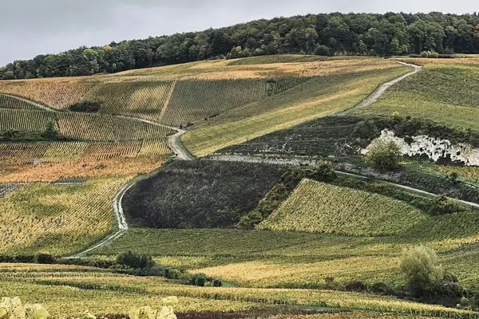

Home › Wine regions › Champagne
Champagne wine region

Photo: PJ DC on Unsplash
The benchmark for sparkling wine.
The benchmark for many wine styles, organized by appellation (AOC).
Notable producers in Champagne
- Krug
- Louis Roederer
- Bollinger
- Veuve Clicquot
- Taittinger
Official appellations
| Appellation | Status | Style | Grapes |
|---|---|---|---|
| Champagne (1936) Only sparkling wine from this region, made by second fermentation in bottle, may be called Champagne. Non-vintage needs at least 15 months in the cellar, vintage three years. | AOC | Sparkling | Champagne (Chardonnay, Pinot Noir, Meunier) |
Champagne wines to try
Moët & Chandon Brut Impérial
Champagne · Champagne (Chardonnay, Pinot Noir, Meunier)
Bright and easy: green apple, citrus and a little brioche.
Food: Canapés, fried snacks
Bollinger Special Cuvée Brut
Champagne · Champagne (Chardonnay, Pinot Noir, Meunier)
Full and toasty: baked apple, walnut and brioche from Pinot Noir and oak.
Food: Roast chicken, aged cheese
Krug Grande Cuvée
Champagne · Champagne (Chardonnay, Pinot Noir, Meunier)
A blend of many years: hazelnut, honey, citrus and fine, lasting bubbles.
Food: Lobster, Parmesan
Veuve Clicquot Yellow Label Brut
Champagne · Champagne (Chardonnay, Pinot Noir, Meunier)
Pinot-led and full: apple, brioche, vanilla and a creamy mousse.
Food: Oysters, fried chicken, canapés
Pommery Brut Royal
Champagne · Chardonnay, Pinot Noir, Pinot Meunier
Fresh, Chardonnay-led house style: citrus, white flowers and a light, crisp finish.
Food: Oysters, canapés
Pommery Brut Apanage 1874
Champagne · Chardonnay, Pinot Noir, Pinot Meunier
A rounder, more gastronomic Pommery: ripe pear, brioche and hazelnut.
Food: Poultry, white fish
Pommery Apanage Blanc de Blancs
Pure Chardonnay Pommery: lemon, white flowers and chalky freshness.
Food: Scallops, sushi
Pommery Brut Rosé Royal
Champagne · Pinot Noir, Chardonnay, Pinot Meunier
Delicate pink Pommery with red berries and a crisp, dry finish.
Food: Salmon, red berries
Pommery Apanage Brut Rosé
Champagne · Pinot Noir, Chardonnay, Pinot Meunier
Fuller rosé with wild strawberry, citrus peel and gentle toast.
Food: Duck, tuna
Pommery Grand Cru Brut
Champagne · Chardonnay, Pinot Noir
Vintage blend from grand cru villages only: depth, toast and fine acidity.
Food: Lobster, chicken in cream
Pommery Cuvée Louise
Champagne · Chardonnay, Pinot Noir
Pommery's prestige cuvée: refined, layered, with honey, almond and long minerality.
Food: Langoustine, caviar
A. Levasseur Extrait Gourmand
Champagne · Pinot Meunier, Chardonnay, Pinot Noir
Grower Champagne from the Marne: generous, fruity and gently toasty.
Food: Gougères, chicken
A. Levasseur Extrait Gourmand Rosé
Champagne · Pinot Meunier, Chardonnay
Grower rosé with ripe red fruit and a soft, creamy mousse.
Food: Charcuterie, salmon
Charles Heidsieck Blanc de Blancs
Rich, creamy Chardonnay Champagne with citrus, brioche and nutty depth.
Food: Turbot, scallops
Charles Heidsieck Rosé Réserve
Champagne · Pinot Noir, Chardonnay, Pinot Meunier
Vinous rosé with red fruit, spice and toasty reserve wines.
Food: Duck, lamb
Laurent-Perrier La Cuvée Brut
Champagne · Chardonnay, Pinot Noir, Pinot Meunier
Light, Chardonnay-rich house style: citrus, white peach and finesse.
Food: Aperitif, oysters
Devaux Cuvée D Rosé
Champagne · Pinot Noir, Chardonnay
Côte des Bar rosé with ripe red berries, spice and a long finish.
Food: Salmon, charcuterie
Ayala Rosé Majeur
Champagne · Chardonnay, Pinot Noir, Pinot Meunier
Fresh, low-dosage rosé: redcurrant, citrus and a crisp, dry finish.
Food: Sushi, prawns
Ayala Blanc de Blancs
Vintage Chardonnay Champagne with lemon, chalk and precise, low-dosage style.
Food: Oysters, sole
Gosset Grand Rosé Brut
Champagne · Chardonnay, Pinot Noir
Fresh, fruit-driven rosé from Aÿ's oldest house: strawberry and citrus.
Food: Salmon, red fruit desserts
Gosset Celebris Rosé Extra Brut
Champagne · Chardonnay, Pinot Noir
Gosset's prestige rosé: dry, complex, with dried red fruit and spice.
Food: Pigeon, lobster
Moët & Chandon Rosé Impérial
Champagne · Pinot Noir, Pinot Meunier, Chardonnay
Bright, fruity rosé: wild strawberry, cherry and a soft mousse.
Food: Salmon, berries
Moët & Chandon Grand Vintage
Champagne · Chardonnay, Pinot Noir, Pinot Meunier
The vintage Moët: riper fruit, toast and more depth than the NV.
Food: Chicken, scallops
Bollinger Rosé Brut
Champagne · Pinot Noir, Chardonnay, Pinot Meunier
Pinot-rich, vinous rosé with red fruit, spice and Bollinger's toasty depth.
Food: Duck, salmon
Bollinger PN (Pinot Noir series)
Blanc de Noirs from a named Pinot Noir village each edition (TX, VZ, AYC): powerful and vinous.
Food: Roast chicken, veal
Bollinger La Grande Année
Champagne · Pinot Noir, Chardonnay
Barrel-fermented vintage Bollinger: rich, nutty, toasty and long.
Food: Lobster, truffle
Bollinger R.D. Extra Brut
Champagne · Pinot Noir, Chardonnay
Recently disgorged Grande Année, aged long on lees: deep, complex and dry.
Food: Caviar, aged Comté
Bollinger La Côte aux Enfants Rouge
Champagne · Coteaux Champenois · Pinot Noir
Rare still red Pinot Noir from a single Aÿ slope: fine, red-fruited and silky.
Food: Roast quail, salmon
Perrier-Jouët Blason Rosé
Champagne · Pinot Noir, Pinot Meunier, Chardonnay
Floral, fruity rosé with red berries and a delicate texture.
Food: Salmon, prawns
Perrier-Jouët Belle Époque
Champagne · Chardonnay, Pinot Noir
Floral, finely balanced prestige cuvée in the famous anemone bottle.
Food: Langoustine, sole
Perrier-Jouët Belle Époque Rosé
Champagne · Chardonnay, Pinot Noir, Pinot Meunier
Elegant prestige rosé: red berries, citrus and white flowers.
Food: Lobster, duck
Armand de Brignac Ace of Spades Brut Rosé
Champagne · Pinot Noir, Pinot Meunier, Chardonnay
Opulent rosé in the metal-clad bottle: ripe red fruit and a creamy finish.
Food: Celebrations, red fruit
Louis Roederer Vintage Brut
Champagne · Pinot Noir, Chardonnay
Pinot-led vintage Roederer: ripe, structured and toasty.
Food: Poultry, veal
Louis Roederer Vintage Rosé
Champagne · Pinot Noir, Chardonnay
Vintage rosé from Cumières Pinot: delicate red fruit and freshness.
Food: Salmon, duck
Louis Roederer Blanc de Blancs
Vintage Chardonnay from Avize: creamy, citrus and chalky.
Food: Scallops, crab
Louis Roederer Cristal
Champagne · Pinot Noir, Chardonnay
Roederer's prestige cuvée: pure, precise, layered and very long.
Food: Caviar, langoustine
Louis Roederer Cristal Rosé
Champagne · Pinot Noir, Chardonnay
The rare pink Cristal: silky red fruit, citrus and remarkable finesse.
Food: Lobster, pigeon
Henriot Brut Souverain
Champagne · Chardonnay, Pinot Noir, Pinot Meunier
Chardonnay-led house blend: citrus, white flowers and brioche.
Food: Aperitif, oysters
Henriot Brut Rosé Millésimé
Champagne · Pinot Noir, Chardonnay
Vintage rosé with red fruit, citrus and mature toast.
Food: Duck, salmon
Taittinger Comtes de Champagne Rosé
Champagne · Pinot Noir, Chardonnay
Taittinger's prestige rosé: intense red fruit, spice and silky texture.
Food: Lamb, lobster
Veuve Clicquot La Grande Dame Rosé
Champagne · Pinot Noir, Chardonnay
Pinot-dominated prestige rosé: deep red fruit and toasty complexity.
Food: Duck, venison
Billecart-Salmon Brut Rosé
Champagne · Chardonnay, Pinot Noir, Pinot Meunier
Pale, elegant classic rosé: strawberry, citrus and fine bubbles.
Food: Salmon, sushi
Billecart-Salmon Louis Salmon Blanc de Blancs
Vintage grand cru Chardonnay: citrus, brioche and great finesse.
Food: Lobster, sole
Billecart-Salmon Cuvée Nicolas François
Champagne · Pinot Noir, Chardonnay
Billecart's prestige vintage: structured, toasty and long-lived.
Food: Turbot, poultry
Dom Pérignon Brut
Champagne · Chardonnay, Pinot Noir
Moët's prestige vintage only: smoky, toasty, creamy and very long.
Food: Caviar, scallops
Delamotte Blanc de Blancs Millésimé
Vintage Le Mesnil Chardonnay (Salon's sister house): taut, chalky and citrus.
Food: Oysters, langoustine
Salon Le Mesnil Blanc de Blancs
Single-village, single-grape icon made only in great years: intense, mineral and very long-lived.
Food: Caviar, turbot
Krug Rosé
Champagne · Pinot Noir, Chardonnay, Pinot Meunier
Deep, spicy rosé with Krug's richness: red fruit, citrus peel and toast.
Food: Lamb, tuna
More wine regions in France
The Wine Reference newsletter
New wines, stories and career guides, one email a week at most.
Over 18s only. Unsubscribe any time with one click. Your email is stored securely by Kit and never shared.
Support The Wine Reference
This guide is free, with no paywall. If it helped you choose a bottle, you can buy me a glass and keep it growing.
🍷 Buy me a glass